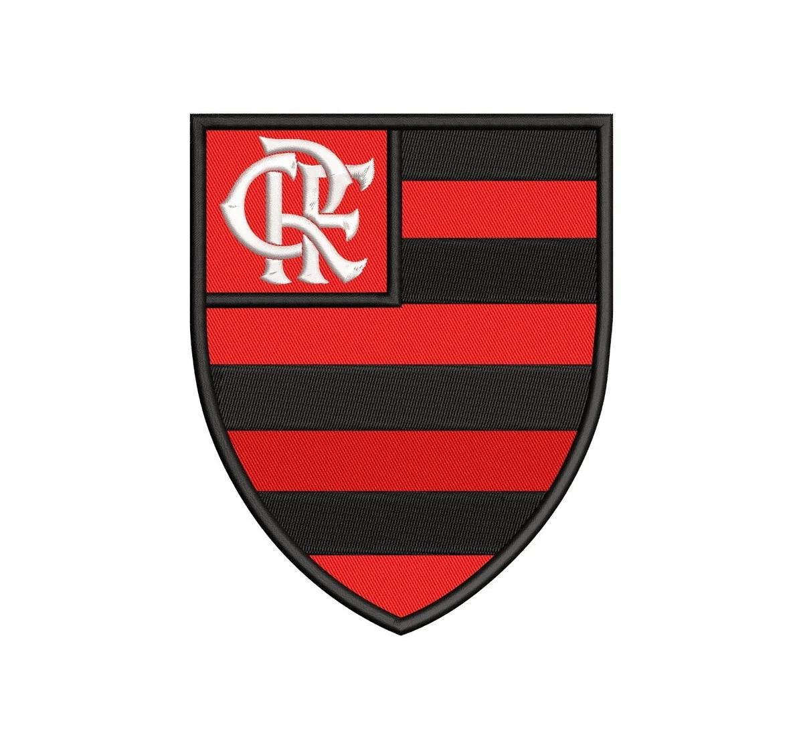

Clube de Regatas do Flamengo
O Clube de Regatas do Flamengo (mais conhecido simplesmente como Flamengo, popularmente pelos apelidos de Fla, Mengo e Mengão, e cujo acrônimo é CRF) é uma agremiação poliesportiva brasileira com sede na cidade do Rio de Janeiro, capital do estado homônimo. Fundado no bairro do Flamengo para disputas do esporte remo em 17 de novembro de 1895, tornou-se um dos clubes mais bem-sucedidos e populares do esporte brasileiro, especialmente pelo futebol. Tem como suas cores tradicionais o vermelho e o preto e como seus maiores rivais esportivos o Vasco da Gama, o Fluminense e o Botafogo.
História
A Origem
Em fins do século XIX o remo dominava o Rio de Janeiro. O futebol começava apenas a aparecer em alguns clubes, mas ainda era olhado com certo temor, pois não estava sendo recebido com entusiasmo pela sociedade carioca. A criação de um grupo organizado com o objetivo de disputar competições de remo com clubes de outros bairros surgiu entre jovens do bairro do Flamengo, no Café Lamas, no Largo do Machado.
Nestor de Barros, José Agostinho Pereira da Cunha, Felisberto Laport, Augusto Lopes, Mário Spindola e José Félix da Cunha Meneses compraram um barco, chamaram-no de "Pherusa" e o reformaram.
Em 6 de outubro de 1895 os antes citados, juntamente com Maurício Rodrigues Pereira e Joaquim Bahia, saíram da Ponta do Caju, e com o tempo desfavorável, foram rumo à Praia do Flamengo, mas o vento fez o barco virar. Bahia nadou até a praia para conseguir ajuda e chegou algumas horas depois, mas a chuva parou rapidamente e outro barco, o "Leal", resgatou os jovens e o que tinha restado da Pherusa. Então foi iniciada uma nova reforma da embarcação, mas ela foi roubada e desapareceu.
O Início no Futebol
A partir de 1902 o remo passou a dividir com o futebol a preferência popular. Assim, os associados do Flamengo tornaram-se sócios também do Fluminense para acompanhar o futebol, e os do clube das Laranjeiras vieram para o rubro-negro a fim de acompanhar as regatas. Alberto Borgerth representava bem o exemplo, pois pela manhã remava pelo Flamengo e à tarde jogava pelo seu clube, o Fluminense.
Entretanto, em 1911, houve a cisão no Fluminense e muitos jogadores do tricolor vieram para o Rubro-negro, resolvendo em assembleia do dia 8 de novembro de 1911 fundar um departamento de esportes terrestres, com Alberto Borgerth na direção. A briga entre Oswaldo Gomes e muitos dos jogadores do primeiro quadro do Fluminense foi a razão da discórdia. Originalmente pensou-se em uma simples adesão ao Botafogo, mas como o alvinegro, na época, era o grande rival do Tricolor Carioca, a ideia foi logo descartada. Em seguida consideraram a ideia de reforçar o já estabelecido Paysandu, mas também foi vetado, uma vez que o clube era composto exclusivamente de ingleses. Finalmente, surgiu a ideia de Borgerth, de se criar uma seção de futebol no Flamengo. A proposta foi aprovada e consagrada na assembleia do clube, realizada no dia 8.